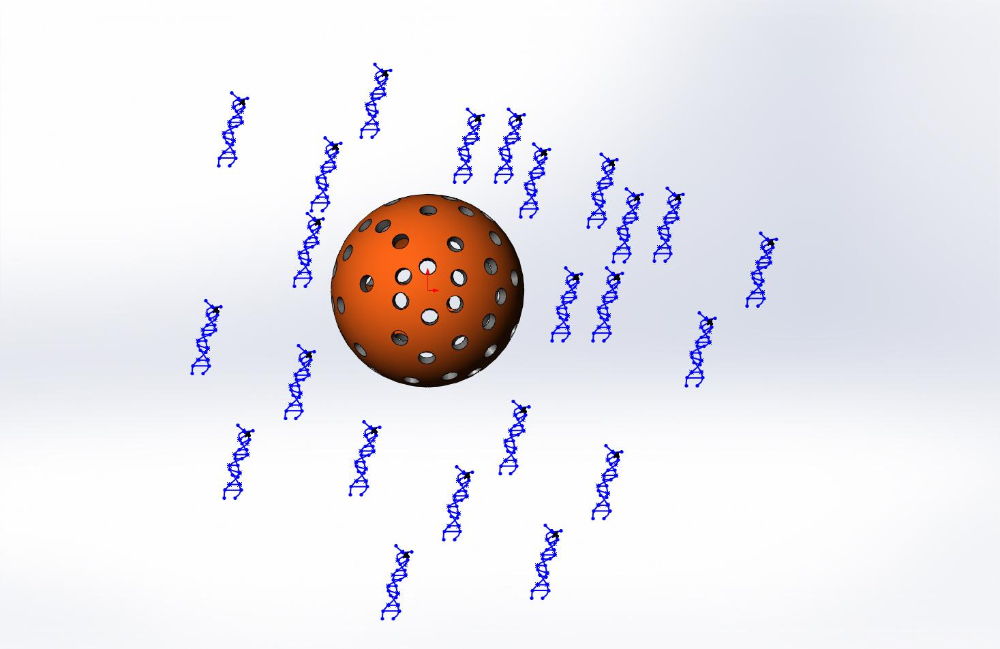

It is important to control the diffusion rate of DNA origami moving outside the HMSN’s and dependent on the pore diameter and other factors. To obtain the relation we used the following diffusion model.
The shell can be considered as an interface between internal DNA
origami solution and external environment.

As shell is very small relative to the solution we can consider the system as semi-infinite.
The semi-infinite medium extends from $z=0 to z=\infty $.
$$ c_A = c_{A0}\ at\ t=0$$
$$ c_A = c_{A0}\ at\ z=\infty $$
$$c_A = c_{AS}\ at\ t=0,\ z=0$$
$$(c_{AS}\ is\ concentration\ inside\ shell)$$
Using the method of Laplace transform1
$$\frac{c_A-c_{ AO }}{c_{ AS }-c_{ AO }} = erfc(\frac{z}{2 \sqrt{Dab.t}})$$
$$\Rightarrow \frac{c_A-c_{AO}}{c_{AS}-c_{AO}} = 1 - erf(\frac{z}{2 \sqrt{Dab.t}})$$
$$\Rightarrow erf(\frac{z}{2 \sqrt{Dab.t}}) = 1-\frac{c_A-c_{AO}}{c_{AS}-c_{AO}}$$
$$\Rightarrow erf(\frac{z}{2 \sqrt{Dab.t}}) = \frac{c_{AS}-c_A}{c_{AS}-c_{AO}}$$
$$\Rightarrow c_A = c_{AS}-(c_{AS}-c_{A0}) . erf(\frac{z}{2 \sqrt{Dab.t}})$$
$$\Rightarrow c_A = c_{AS}-(c_{AS}-c_{A0}) .(\frac{2}{\sqrt{\pi}}).\int_0^{\frac{z}{2 \sqrt{Dab.t}}}e^{-\eta^2}\ d\eta$$
where,
$z$ is distance from inner surface of shell
$Dab$ is coefficient of diffusion
$t$ is time from start of diffusion
Using the Leibnitz rule for differentiating the integral,
$$\frac{\partial c_A}{\partial z} =
-(c_{AS}-c_{AO})(\frac{2}{\sqrt{\pi}})(\frac{z}{2 \sqrt{Dab.t}})(e^{\frac{-z^2}{4Dabt}})$$
At inner surface,
$$z=0$$
$$\frac{\partial c_A}{\partial z}_{z=0} =-\frac{c_{AS}-c_{A0}}{\sqrt{\pi.Dab.t}}$$
At outer surface,
$$z = l$$
$$\frac{\partial c_A}{\partial z}_{z=l} =-\frac{(c_{AS}-c_{A0}).e^{-\frac{l^2}{4.Dab.t}}}{\sqrt{\pi.Dab.t}}$$
$$Rate\ in - Rate\ out = accumulation$$
$$-Dab . A . (\frac{\partial c_A}{\partial t})_z + Dab.A.(\frac{\partial c_A}{\partial t})_{z=z+\Delta z} = A.\frac{\partial c_A}{\partial t}.z$$
$$\Rightarrow -
Dab[\frac{-(c_{AS}-c_{A0}).e^{-\frac{z^2}{4.Dab.t}}}{\sqrt{\pi.Dab.t}}+\frac{c_{AS}-c_{A0}}{\sqrt{\pi.Dab.t}}] = \frac{\partial c_A}{\partial t}.\Delta z$$
$$\Rightarrow \frac{\partial c_A}{\partial t} = Dab.(c_{AS}-c_{A0})\frac{[\frac{\partial (1 - e^{-\frac{z^2}{4.Dab.t}})}{\partial z}]}{\sqrt{\pi.Dab.t}}$$
$$\Rightarrow \frac{\partial c_A}{\partial t} = \frac{Dab.(c_{AS}-c_{A0}).2z.e^{-\frac{z^2}{4.Dab.t}}}{4.Dab.t.\sqrt{\pi.Dab.t}}$$
At
$$z=l$$
$$\Rightarrow \frac{\partial c_A}{\partial t} = \frac{(c_{AS}-c_{A0}).l.e^{\frac{-l^2}{4.Dab.t}}}{2.t.\sqrt{\pi.Dab.t}}$$
For concentration of shells we can assume
$$\Rightarrow \frac{\partial c_A}{\partial t} = \frac{n.(c_{AS}-c_{A0}).l.e^{\frac{-l^2}{4.Dab.t}}}{2.t.\sqrt{\pi.Dab.t}}$$
where $n$ is number of shells in the solution
$$\Rightarrow \frac{\partial c_A}{\partial t} = \frac{c_S.V.(c_{AS}-c_{A0}).l.e^{\frac{-l^2}{4.Dab.t}}}{2.m.t.\sqrt{\pi.Dab.t}}$$
where,
$c_S$ = concentration of nanoparticles
$V$ = Volume of solution
$m$ = molar mass of nanoparticles
For biological solutes2
$$D = \frac{9.4*10^{-15}*t}{\mu _b*M^{\frac{1}{3}}}$$
where,
$T$= temperature in K
$\mu _b$ = viscosity of solvent
$M$ = molar mass of solute
This gives the final equation as
$$\frac{\partial c_A}{\partial t} =
\frac{c_S.V.(c_{AS}-c_{A0}).(5.157).10^6.l.\sqrt{\mu
_b*M^{\frac{1}{3}}}.e^{-\frac{\mu
_b*M^{\frac{1}{3}}*2.6596*l^2*10^{13}}{T.t}}}{m.\sqrt{\pi.T.t^3}}$$
Calculations
At room temperature
$$
T=298K\\
m=60\\
M=1000\\
t=60s\\
c_{A0} = 0\\
c_S = 5\ mole/L(for\ small\ time\ nearly\ same\ as\ initial)\\
c_{AS} = 5\ mole/L\\
\mu _b = 0.0009\\
V=1000L\\
l=3*10^{-8}\\
\frac{\partial c_A}{\partial t} = 0.00043\ mol/l-min
$$
Thus, our signalling molecule comprising of DNA origami are
diffusing out of the HMSN into the solution at a optimum theoretical
rate of $0.00043\ mol/l-min$.
[1]Seader J. D. “Separation Process Principles” 2nd edition Page 84-88
[2]Seader J. D. “Separation Process Principles” 2nd edition Chapter 3